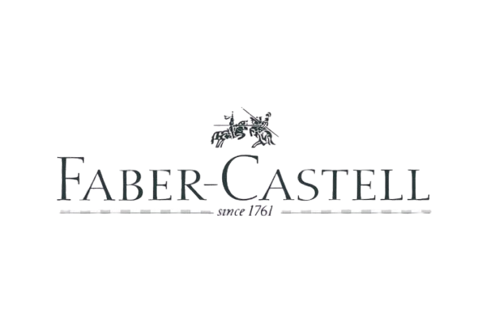
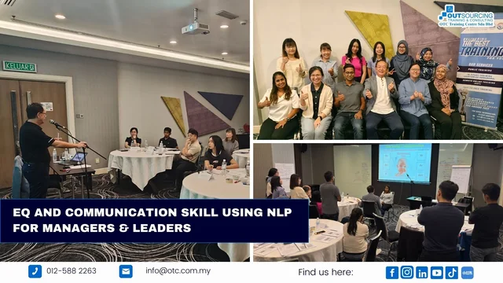
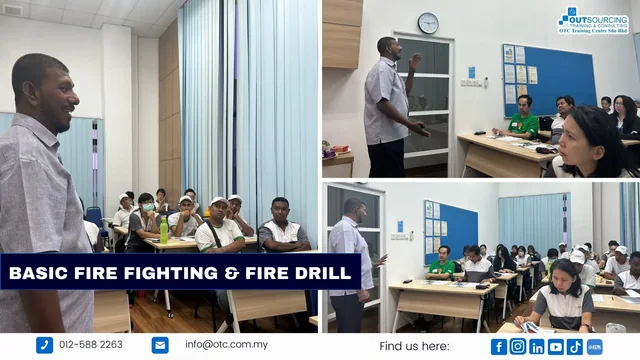
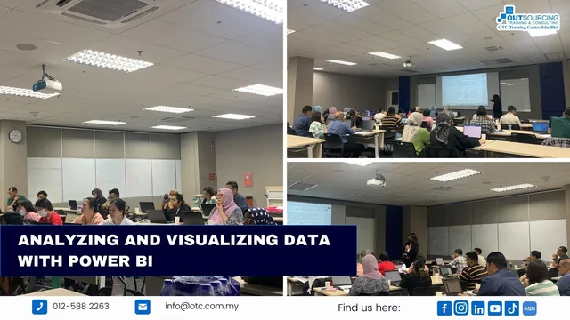
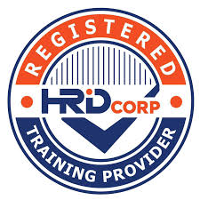
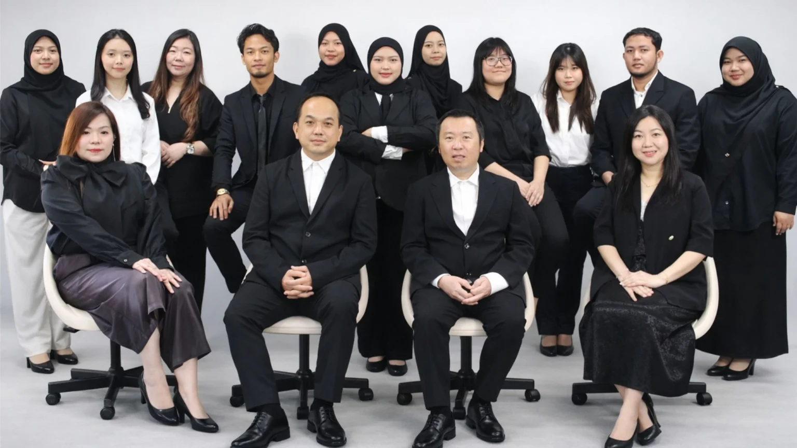

01People
Leadership & people
Build confident leaders and more effective teams.
View customised programmesTrusted corporate training across Malaysia
Corporate training in Malaysia, from leadership and workplace safety to technical and digital skills.
Part of the learning journey of leading organisations.

Choose a learning area, then explore related programmes or ask us for a recommendation.
Explore the categories below to find a starting point.
Looking for a scheduled course?
Browse public programmesBuild confident leaders and more effective teams.
View customised programmesDevelop the practical skills behind safer operations.
View customised programmesHelp your workforce adapt to a changing workplace.
View customised programmesStrengthen the knowledge that supports better decisions.
View customised programmesSupport stronger working relationships and people management.
View customised programmesSupport a culture of consistency and continuous improvement.
View customised programmesBrowse related customised programmes, or ask us about public training options.
Talk to a training consultantCompare scheduled public courses with training tailored to your organisation.
Explore scheduled programmes and develop your skills alongside other professionals.
Discuss training built around your team’s roles, workplace challenges and learning goals.
A closer look at OTC workshops. Select an image to explore the full session collage.

EQ and communication skills for managers and leaders.
Take a look inside the learning experience.
Basic fire fighting and fire-drill training.

Analysing and visualising data with Power BI.
Images from OTC’s official training gallery.
Explore the full galleryOTC works within Malaysia’s recognised training, technical, safety and professional development ecosystem.
Get to know OTC
Registered training provider
Professional development partner
Registered organisation
Environmental training ecosystem
Technical training recognition
Safety training ecosystem

OTC Training Centre Sdn Bhd supports organisations across Malaysia with professional, technical, safety and leadership training.
Share your topic, team size and workplace priorities.
Discuss a suitable programme, format and schedule.
Ask our team about documentation and HRD Corp eligibility.
Build knowledge that your people can bring back to work.
Explore OTC’s guide for line managers.
Read the articleDiscover the role of practical finance training.
Read the articleExplore OTC’s perspective on workforce upskilling.
Read the articleShare your topic, estimated participant count and preferred delivery format. Our team will help you explore suitable options.